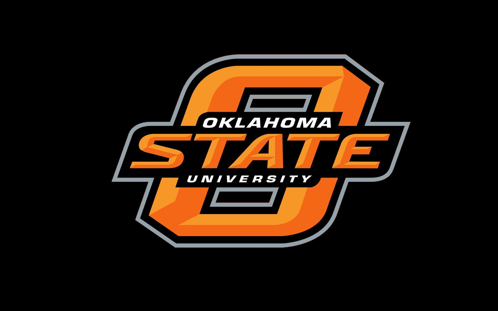
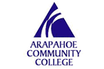

SUMMARY
Analyst/Developer with more than 20 years of experience in the clinical healthcare environment. Successful record working with the Orion Rhapsody interface engine and numerous laboratory software applications. Focused on providing customer solutions whether developing interfaces, building applications, or supporting end users.
Additional hands on experience:
- Project management experience
- Three years with Rhapsody Interface Engine
- Fifteen years of Experience working with Laboratory Applications
- Experienced with building the Instrument Manager application
PROFESSIONAL EXPERIENCE
BOULDER COMMUNITY HEALTH, Boulder, CO 2016-2018
Acute care hospital
Clinical Applications Analyst II, 2016-2018
As a member of the clinical applications team my main task was to support and trouble-shoot the Meditech laboratory module. Provided tier two support and worked with Meditech vendor to resolve problems. Shared call with the team, and during call successfully supported other modules like ORM, Pharmacy, and PCS. Worked on various other projects as assigned.
- Project Manager for selecting and implementing the new StatStrip glucose meters.
- Lead team member for building and deploying the Instrument Manager middleware application
CATHOLIC HEALTH INITIATIVES, Englewood, CO 2011-2015
National healthcare provider.
Integration Analyst II, 2013-2015
As a developer, created interface documentation and developed interfaces for customers. Provided guidance and information to our support team when issues arose with the interfaces in the production environment.
- Was part of the development team which successfully implemented major ULH interface upgrade. Team received many accolades
- Primary developer for LACE score interfaces across multiple markets. Attained high praise from the project manager for leadership on the project
Integration Analyst II, 2011-2013
As an analyst, created the various types of documentation that was used by developers for developing interfaces. Actively participated with the team to create accurate interface specifications that could later be used for troubleshooting problems.
- Collaborated with oncology developer creating a solution for lab reports which became the standard for these types of interfaces
- Served as mentor for other analysts and developers regarding laboratory operations
LONGMONT UNITED HOSPITAL, Longmont, CO 2006-2010
Acute care hospital.
Lab Systems Analyst
Tasked to maintain the SCC Softlab software application database. Investigated and resolved all software issues.
- Assisted developer to implement a new web portal for clinic. Improved efficiencies for physicians in eliminating paperwork,
and quicker access to test results for patients
- Led the LIS team in improvements to application. Improvements and bug fixes allowed the lab technicians to be more efficient in their work
- Created LIS budget to present to Lab Director
SOUTHWEST MEDICAL CENTER, Liberal, KS 2001-2006
County hospital.
Laboratory Information Systems Administrator
Primarily responsible for the implementation, and support of the Meditech
Client Server software system. Insured that the laboratory followed CAP guidelines, and met the guide lines for certification of the LIS.
- Led the team implementing the new laboratory information system which provided more flexibility, greater performance, and saved the hospital money in the support agreement contract
- Designed and created a paperless blood bank system in lab database. Saved the lab thousands of dollars and hundreds of hours until the purchase of new module
EDUCATION
BS, Biology
Oklahoma State University, Stillwater, OK

Associates, Medical Laboratory Technology
Arapahoe Community College, Littleton, CO

PROFESSIONAL DEVELEOPMENT
- Fundamentals of Project Management Certificate
- Data Innovations & Instrument Manager Training
- Rhapsody Associate Certification
- HL7 E-Learning course
- MLT ASCP, NCA CLT